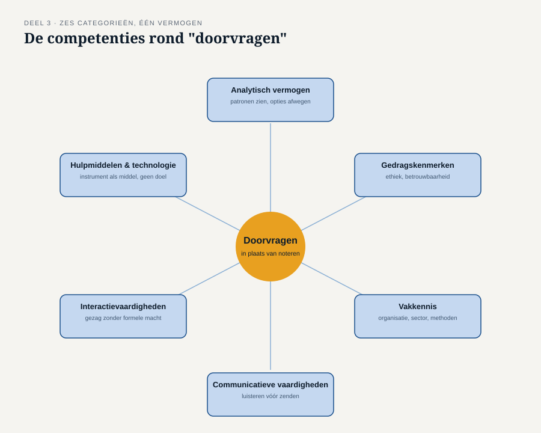
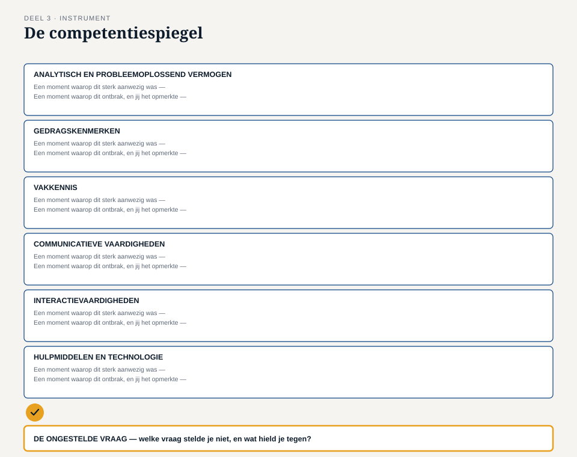

Deel 3 — Houding, principes en de eigen competenties
Slidedeck · Ductus-cursus Business-analyse · niveau 1 · deel 3 van 30 · 27 slides
Slide 1 — Titel
Business-analyse — deel 3 Houding, principes en de eigen competenties
Slide 2 — Terugblik
Deel 1: een instrument om verandering scherp te formuleren. Deel 2: een denkraam om een situatie volledig te ontleden.
Beide vragen om iets dat vanzelfsprekend klinkt: doorvragen.
Slide 3 — Ayla’s bekentenis
“Iemand van de stuurgroep zei: ‘we willen dat werkgevers alles zelf kunnen.’ Ik schreef dat letterlijk op.”
“Waarom vroeg je niet door?”
Stilte.
“Ik zag mezelf niet als iemand die dat mocht vragen.”
Slide 4 — Waar we het over gaan hebben
- Noteren versus analyseren
- Zes categorieën onderliggende competenties
- De competentiespiegel
- Bevinding B3 sluiten
Slide 5 — Geen vaardigheidstekort
Ayla kón doorvragen. Dat bewijst haar latere werk.
Wat ontbrak, was de overtuiging dat het bij haar taak hoorde.
Een houding is geen talent — het is een keuze.
Slide 6 — Noteren
Vastleggen wat er gezegd wordt, zo getrouw mogelijk. Waardevol. Maar het stopt bij wat is uitgesproken.
Slide 7 — Analyseren
Vaststellen wat er werkelijk aan de hand is.
Navragen · aannames toetsen · het denkraam checken · soms iemand tegenspreken die hoger staat dan jij
Slide 8 — Het verschil zit niet in intelligentie
Ayla was op geen enkel vlak minder capabel.
Het verschil zat in wat zij zichzelf toestond.
Slide 9 — Zes categorieën, geen los rijtje

Analytisch vermogen · Gedragskenmerken · Vakkennis Communicatie · Interactie · Hulpmiddelen en technologie
Slide 10 — Analytisch en probleemoplossend vermogen
Ontleden, patronen zien, verbanden leggen, opties afwegen.
Wat Merel deed in deel 2 — nog voordat ze er woorden voor had.
Slide 11 — Gedragskenmerken
Ethisch handelen, betrouwbaarheid, aanpassingsvermogen, doorzettingsvermogen onder druk.
Hier hoort Ayla’s verhaal het meest thuis.
Slide 12 — Vakkennis
Kennis van de organisatie, de sector, de methoden, de bestaande oplossingen.
Zonder vakkennis weet je niet wélke vraag relevant is.
Slide 13 — Communicatieve vaardigheden
Luisteren staat voorop. Niet zenden.
De meest voorkomende beginnersfout: communicatie opvatten als goed kunnen presenteren.
Slide 14 — Interactievaardigheden
Iets voor elkaar krijgen zonder formeel gezag. Weerstand, politiek, faciliteren, onderhandelen.
Doorvragen bij een stuurgroep vraagt iets anders dan doorvragen bij een collega.
Slide 15 — Hulpmiddelen en technologie
Met de juiste instrumenten werken — zonder ze als doel op zich te zien.
De veranderregel en het evenwichtsblad: hulpmiddel, geen doel.
Slide 16 — Geen persoonlijkheidstest
Alle zes categorieën zijn te trainen.
Ayla bewijst het omgekeerde van een persoonlijkheidsverklaring: zij kon het, zodra ze zichzelf het recht gaf.
Slide 17 — [Opdracht 1]
Twee versies van hetzelfde gesprek. Wat ontbreekt er in de eerste?
Slide 18 — De werkvorm van dit deel
De competentiespiegel
Zes categorieën. Eén veld dat het verschil maakt.
Slide 19 — Per categorie, twee vragen
Een moment waarop dit sterk aanwezig was — concreet. Een moment waarop dit ontbrak, en jij het opmerkte — ook concreet.
“Ik twijfel weleens” telt niet.
Slide 20 — Het veld dat het verschil maakt
De ongestelde vraag
Welke vraag had je kunnen stellen, en stelde je niet? Kennis die ontbrak — of het gevoel dat het niet aan jou was?
Slide 21 — Waarom dit onderscheid ertoe doet
Kennis ontbrak → je weet nu wat je moet leren. Een aanname over je rol → er is niets te leren, er is iets te besluiten.
Slide 22 —

Het invulblad van de competentiespiegel
Slide 23 — [Opdracht 3 — persoonlijk]
Dit wordt niet gedeeld of nagekeken. Neem de tijd. Zoek de stilte op.
Slide 24 — Ethisch handelen
Eerlijk over wat je wel en niet weet. Belangen niet verhullen ten gunste van één partij. Een ongemakkelijke bevinding melden, ook ongevraagd.
→ komt terug in deel 28, als “nee, dit niet” tegenover een bestuur
Slide 25 — Het examen
Domein 2 — houding voor effectieve business-analyse — 14% Geen technisch juist antwoord, wel een professioneel juist antwoord: nieuwsgierig, doorvragend, eerlijk over wat je niet weet.
Slide 26 — B3 gesloten
Geen vaardigheidstekort. Geen tijdgebrek. Een aanname over de eigen rol — die je op een dag anders kunt besluiten.
Slide 27 — Volgende keer
Je weet nu wát je doet, met welk denkraam, en vanuit welke houding.
Deel 4: in welke rol — en waar eindigt jouw analyse en begint iemand anders’ ontwerp?